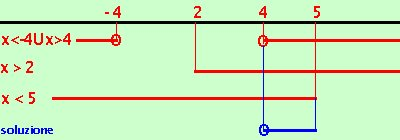

Esercizio
Risolvere la disequazione
|
 |
 |
| x - 2 > |
x2 - 16 |
- Il radicando deve sempre essere maggiore o uguale a zero
x2 - 16  0 0
- Essendo il radicale definito positivo (o nullo) anche il primo termine (essendo maggiore del secondo) dovra' essere positivo
x - 2 > 0
- Il quadrato del primo termine dovra' essere maggiore del quadrato del secondo termine
(x - 2)2 > x2 - 16
Debbo quindi risovere il sistema
 x2 - 16
x2 - 16  0 0
x - 2 > 0
(x-2)2 > x2 - 16
dopo alcuni calcoli otteniamo:
x2 - 16 0
x - 2 > 0
x < 5
-
la prima
x2 - 16 0 e' verificata per
x
 -4 U x 4
calcoli -4 U x 4
calcoli
-
la seconda
x - 2 > 0 e' verificata per
x > 2
- la terza
e' verificata per
x < 5
Essendo un sistema devo prendere le soluzioni comuni

Riporto su un grafico, evidenziando con una linea marcata i valori che risolvono le disequazioni, i valori dove e' accettabile l'uguale li indico con un cerchietto
Devo prendere i valori che risolvono contemporaneamente tutte e tre le disequazioni:
ottengo come risultato
4 x < 5
|